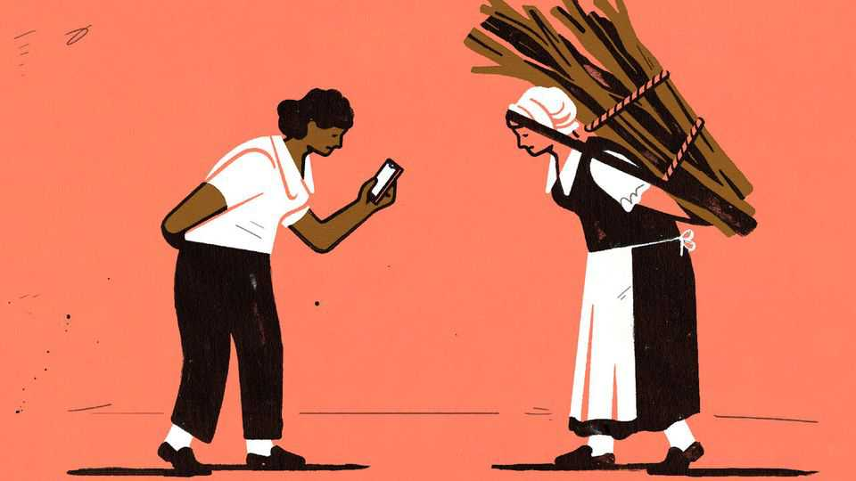

Plague, gruel and bad teeth: why do people idealise the olden days?
A rip-roaring rebuttal of the idea that progress is a myth

Nov 12th 2026
Many people yearn for the good old days. In a global Ipsos poll, respondents given a choice of being born half a century ago or now picked the past by nearly two to one. A startling number think even the distant past was not so bad: in a YouGov poll, 40% of Britons were unsure that life was worse in the 1600s. Anti-capitalists on social media grouch that workers in Amazon warehouses are more oppressed than feudal farm labourers. “You have less free time than a medieval peasant,” and this is “frankly outrageous”, complained one on X.
P.J. O’Rourke, an American satirist, once offered a one-word rebuttal of paeans to the pre-industrial past: “dentistry”. Chelsea Follett, a scholar at the Cato Institute, a free-market think-tank in Washington, expands on this incisive quip. The poor in pre-modern Europe ate cheap bread made by crooked bakers with grit, chalk, animal bones and other tooth-chipping hazards. The rich had sugar but no toothpaste. Queen Elizabeth I lost so many teeth that she stuffed her mouth with fine cloth to stop her cheeks from sagging. The ones that remained were famously black.
Dentists were either quacks (Louis XIV’s medical adviser favoured treating cavities with partridge brains) or barbers with filthy pliers and only grog for anaesthetic. Tooth extraction was agonising and often fatal. In a typical week in London in 1665, infections caused by dental surgery accounted for nearly 10% of deaths, if one excludes those from the plague.
In “The Grim Old Days”, Ms Follett lays out in gruesome detail how life was before the Industrial Revolution, thus offering a rip-roaring reminder of why material progress matters. In the old days even palaces stank, for no one had flush toilets. Chamber pots were emptied into cesspits or out of the window. During the Dutch Golden Age, rules required compensation for passersby whose clothes were ruined by falling “night soil”, but elsewhere people just had to wipe it off and wish they had a spare outfit, which most did not. Dismal sanitation spread disease and killed in other ways, too. In 1184 a wooden floor collapsed during political negotiations in Erfurt, plunging a room filled with nobles of the Holy Roman Empire into a “latrine cesspit”, where 60 of them drowned.
The popular idea that pre-industrial labourers led more leisurely lives than their harassed modern peers is bunk. It is based on an estimate by Gregory Clark, a historian, that medieval English workers toiled for 150 days a year. However, Dr Clark later concluded that it was more like 300. And even that fails to account for the domestic drudgery that occupied nearly every waking hour. People today may gripe about fuel prices, but pre-industrial peasants had to walk miles to gather wood to heat their gruel and avoid freezing to death in winter. Even the rich were cold: Louis XIV’s wine sometimes froze on his table.
Some people think food today is worse than in the past, since so much of it is highly processed. Ms Follett invites us into an old-fashioned kitchen—or rather the single, cramped, smoke-packed room in which a typical family cooked, ate, fought and slept. Their diet was hard bread and bland porridge. Since the water was foul, even babies were fed bread soaked in beer, which damaged their brains.
Before refrigeration, food spoiled. Milk was carried to market in open pails, exposed to “overflowings from mud-carts…and trash chucked into it by roguish boys”. Samuel Pepys, a 17th-century diarist, was repelled by a dish of sturgeon with “very many little worms creeping”. Spices were so precious that wars were fought over them. When harvests failed, people starved. Europe saw thousands of bread riots between the 15th and 18th centuries; one sparked the French revolution. In 1672, after a year of war in the Netherlands, an angry, hungry mob killed and ate their prime minister.
Pre-industrial homes were tiny and spartan. Multiple families squeezed into a space smaller than a single modern American bedroom. If pre-industrial peasants had seen such a bedroom, with its soft bed and glass windows, they would have assumed it belonged to a duke, at least. Furniture was rare. In 1743 Horace Walpole, an earl, wrote a letter describing how much he loved his new sofa. His correspondent “didn’t know what a sofa looked like”.
Some pundits praise pre-modern sleeping habits. Ms Follett retorts that “unimaginably high levels of stress” made it hard for people to relax on bug-ridden beds that they shared with the whole family. They lay awake for fear of evil spirits and kept weapons at hand to ward off thieves. Homes were pitch dark at night, candles were expensive and the streets outside were a “black stage for tragedies and murders”, as Shakespeare put it.
But at least people weren’t glued to their screens all day, right? True. “Our forebears were bored out of their minds most of the time,” writes Ms Follett. Public executions offered sporadic entertainment; people would walk miles to watch a heretic burn. They amused themselves by torturing animals, too. On Shrove Tuesday, English crowds would tie a rooster to a post and stone it to death. At the Festival of Cats in Belgium, felines were tossed from belfries and set on fire. Until 1770 Londoners could buy tickets to gawp at the mentally ill locked up in Bedlam, an asylum. However, less than a fifth of English towns in the early 1700s had a toy shop.
Perhaps, though, there was a deeper sense of community in the old days? Well, yes, in the sense that pre-industrial peasants seldom dared venture more than a few miles from where they were born. “The number of potential [marriage] partners in one’s tiny village was low, and the few available choices might all be one’s cousins.” Birth defects were, inevitably, rife.
Statistics about pre-modern life are so grim that many readers will struggle to imagine the world they represent. In 1764 most newborns in London did not reach the age of five. Children died in such numbers that “their graves often went unmarked”, and “practically every major poet explored the subject. The words ‘tomb’ and ‘womb’ were frequently paired as rhymes.” On the plus side, the relentless struggle for survival gave our forebears a sense of purpose. Suicide was rarer in the grim old days than now.
At a time when important political movements in the rich world are based on a rosy view of the past and a cynical attitude to science, this book is a splendid corrective. As Ms Follett was finishing it, her daughter Celeste contracted scarlet fever, which used to be deadly. “I am forever grateful”, she writes, “that Celeste was born into a world with antibiotics.” ■